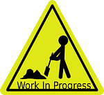
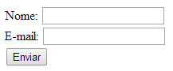
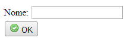
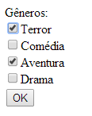
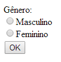
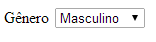
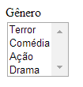
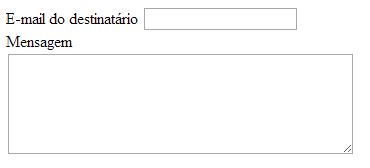
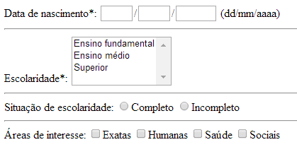

Diretoria Acadêmica de Gestão e Tecnologia da Informação
Disciplina de Design Web e Arquitetura da Informação

Formulários - parte 1
Formulários permitem a uma página web coletar dados informados pelo usuário. A interação entre o usuário e o formulário é realizada através de elementos denominados controles. Os dados coletados pelo formulário são submetidos a um programa hospedado no servidor, sendo que a criação deste tipo de programa foge ao escopo desta disciplina. Aqui, nos limitaremos a conhecer os elementos HTML para a criação de formulários.
Formulários e controles
Um formulário é definido através da tag form. Esta tag é normalmente utilizada em conjunto com os atributos action e method. action é utilizado para indicar o endereço (URL) de destino do formulário, enquanto method indica o método HTTP utilizado a ser utilizado na submissão do formulário (GET ou POST).
Um formulário contém campos para captação de dados. O exemplo a seguir, define um formulário com dois campos de texto e um botão de submissão.
<form action="pagina.html" method="get">
Nome: <input type="text" name="nome" /> <br/>
E-mail: <input type="text" name="email" /> <br/>
<input type="submit" />
</form>

Normalmente cada campo é usado em conjunto com o atributo name. O valor deste atributo é utilizado pelo programa no lado servidor para identificação do campo.
A seguir, são apresentados os tipos de controles e campos disponíveis junto com seus respectivos elementos HTML.
Campo de texto de uma linha
É definido pelo elemento input em conjunto com o atributo type="text". É utilizado para captar digitação do usuário. Seu uso foi demonstrado no exemplo anterior.
Campo de senha
Similar ao campo de texto de uma linha, mas não exibe os caracteres informados pelo usuário. É definido pelo elemento input em conjunto com o atributo type="password".
<form action="pagina.html" method="post">
Login: <input type="text" name="login" /><br/>
Senha: <input type="password" name="senha" /><br/>
<input type="submit" />
</form>
Botões
Podem ser do tipo submit ou do tipo reset. O tipo submit, envia os campos do formulário, junto com seus respectivos valores, para o endereço definido no atributo action do formulário. O do tipo reset remove os valores informados pelo usuário, deixando os campos com seus valores iniciais.
Botões podem ser definidos pelo elemento input em conjunto com o atributo type (valores submit ou reset) como no exemplo abaixo. O uso do atributo value permite personalizar o texto exibido pelo botão.
<form action="pagina.html" method="post">
Login: <input type="text" name="login" /><br/>
Senha: <input type="password" name="senha" /><br/>
<input type="submit" value="OK" />
<input type="reset" value="Limpar" />
</form>
Botões também podem ser definidos através do elemento button. A diferença, em relação ao elemento input, é que button permite a inserção de conteúdo HTML para enriquecer a visualização do botão.
<form action="pagina.html" method="post">
Nome: <input type="text" name="nome" /><br/>
<button type="submit">
<img src="formularios_parte_1/accept.png" /> OK
</button>
</form>

Checkbox
Controle que possibilita a definição e seleção de várias opções (valores) pré-definidas para um mesmo campo. O atributo name identifica o campo em questão. Deve-se utilizar um elemento input com o atributo type="chekbox" para cada opção disponível ao campo.
<form action="pagina.html" method="post">
Gêneros: <br/>
<input type="checkbox" name="genero" value="terror" />Terror <br/>
<input type="checkbox" name="genero" value="comedia" />Comédia <br/>
<input type="checkbox" name="genero" value="aventura" />Aventura <br/>
<input type="checkbox" name="genero" value="drama" />Drama <br/>
<button type="submit">OK</button>
</form>

Radio button
Semelhante ao checkbox, mas permitindo a seleção de apenas uma única opção. É definido pelo elemento input com o atributo type="radio".
<form action="pagina.html" method="post">
Gênero: <br/>
<input type="radio" name="genero" value="M" />Masculino <br/>
<input type="radio" name="genero" value="F" />Feminino <br/>
<button type="submit">OK</button>
</form>

Lista de seleção
Controle que exibe uma relação pré-definida de valores disponíveis para seleção. Deve-se inserir um elemento option para cada opção disponível. Para inserir uma lista de seleção devemos utilizar o elemento select.
<form action="pagina.html" method="post">
Gênero
<select name="genero">
<option>Masculino</option>
<option>Feminino</option>
</select>
</form>

Por padrão, só é permitida a seleção de uma única opção. O atributo multiple="multiple" altera este comportamento e faz com que o controle seja renderizado no formato de lista com rolagem, ao invés de lista escamoteável.
<form action="pagina.html" method="post">
Gênero <br/>
<select name="genero" multiple="multiple">
<option>Terror</option>
<option>Comédia</option>
<option>Ação</option>
<option>Drama</option>
</select>
</form>

Caso se deseje este último formato de lista, mas com seleção de somente uma opção, basta utilizar o atributo size para indicar a quantidade de itens visualizados.
Campo de texto de múltiplas linhas
Controle destinado a receber textos longos, incluindo quebras de linha. Os atributos rows e cols podem ser utilizados para ajustar, respectivamente, a quantidade de linhas e a quantidade de colunas do controle exibidas pelo controle. É inserido através do elemento textarea.
<form action="pagina.html" method="post">
E-mail do destinatário
<input type="text" name="email"> <br>
Mensagem<br/>
<textarea name="msg" rows="6" cols="40">
</textarea>
</form>

Exercícios
1) Escreva uma página web com o formulário ilustrado na figura abaixo.
Referências
- SILVA, Maurício Samy. Construindo sites com CSS e (X)HTML: sites controlados por folhas de estilo em cascata. São Paulo: Novatec, 2008.